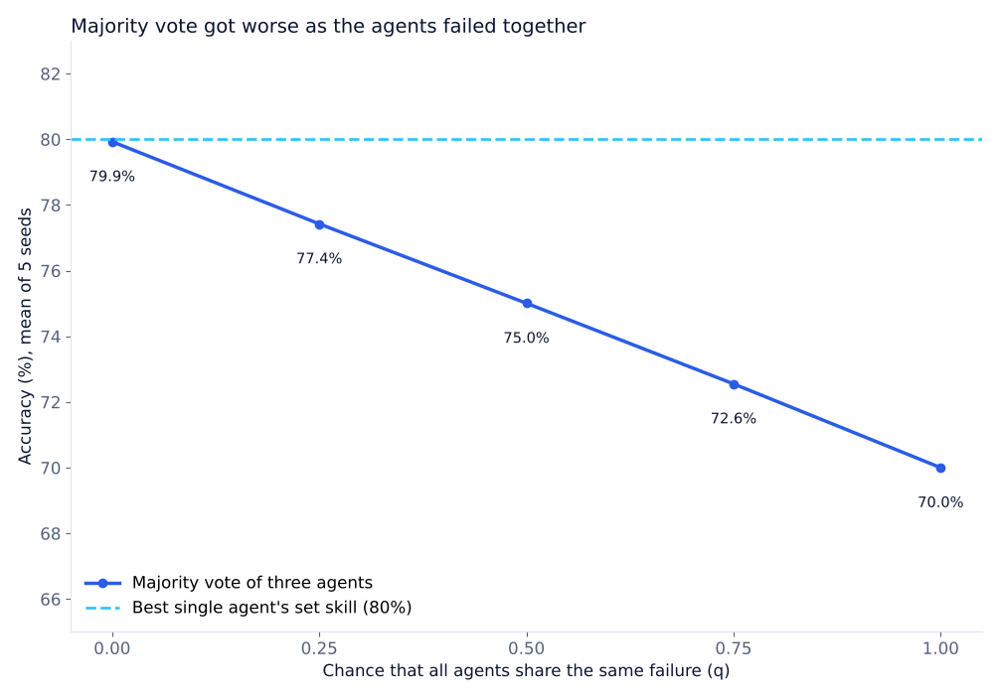

Experiment · Agentic AI · Multi-agent decisions
When AI agents fail together, more votes do not help
Majority voting only helps when the agents make different mistakes.
By Muzammal Hussain · 24 October 2026 · 4 min read
A common way to make AI agents more reliable is to ask several of them and take the majority answer. This works when their mistakes are independent, like asking three people who never talked to each other. But agents built on similar models, prompts and data can be wrong for the same reason at the same time. I simulated that situation to see how quickly voting loses its value.
Key findings
- Majority vote accuracy fell from 79.9% to 70.0% as the chance of a shared failure went from 0 to 1.
- Even with fully independent agents, the vote did not beat the best agent: 79.9% against that agent's set skill of 80%.
- Confidence-weighted voting got worse too: its Brier score rose from 0.147 to 0.246.
- A confidence correction barely helped: it lowered the Brier score by less than 0.001 at every level.
- These are simulated agents, not language models. No LLM was called.
What I did
I used three simulated agents with set skills of 80%, 70% and 62% on a yes/no task. For every scenario there is a chance q that a shared shock happens, a single cause that pushes all three agents the same way. I ran q at 0, 0.25, 0.5, 0.75 and 1, with five random seeds and 2,500 scenarios per seed. Note that q is the chance of the shared event in my simulator; it is not a correlation coefficient measured between agents.
I compared three team rules: a plain majority vote, a vote weighted by each agent's raw confidence, and the same weighted vote after a confidence correction. I report accuracy for the vote and the Brier score (the average squared gap between confidence and what really happened, lower is better) for the weighted rules.
Results

| Shared failure chance (q) | Majority vote accuracy | Weighted Brier | Weighted Brier, corrected |
|---|---|---|---|
| 0 | 79.9% | 0.1466 | 0.1460 |
| 0.25 | 77.4% | 0.1726 | 0.1719 |
| 0.5 | 75.0% | 0.1963 | 0.1956 |
| 0.75 | 72.6% | 0.2214 | 0.2207 |
| 1 | 70.0% | 0.2462 | 0.2452 |
What this means
Three votes only count as three pieces of evidence if the voters fail for different reasons. When they share a failure, the extra votes repeat the same mistake, like three witnesses who all read the same wrong newspaper report. The drop was steady: about 2.5 accuracy points for every 0.25 increase in q.
The second finding was a surprise to me. With one strong agent and two weaker ones, the vote was never better than the strong agent's set skill, even with independent mistakes; the two weaker agents can outvote the strong one when it is right. Before building a team of agents, it is worth checking whether the best single agent is already as good.
The confidence correction did not solve anything here, because the problem is not that each agent's confidence is wrong but that the agents are not independent. That needs a different kind of fix, such as giving agents different evidence or measuring how often they fail together.
Limitations
This is a simulator with skills and a shared-shock mechanism that I chose. It does not show how often real language models fail together, and q should not be read as a measured correlation. There are five seeds per setting. Accuracy and Brier score measure different things, so the two columns of the table should not be compared directly. The calibration error of the weighted rules did not change in a consistent way and is in the repository rather than here.
What I will test next
- Measure how often qwen2.5:3b and llama3.1:8b are wrong on the same questions.
- Compare agents that share a prompt with agents given different evidence.
- Compare the team with its best single agent in every run, not only with its set skill.
The experiment runs in plain Python. The numbers above are means across five seeds computed from outputs/metrics_summary.csv in the repository; it is a follow-up to Averaging agents' confidence made the team less trustworthy.